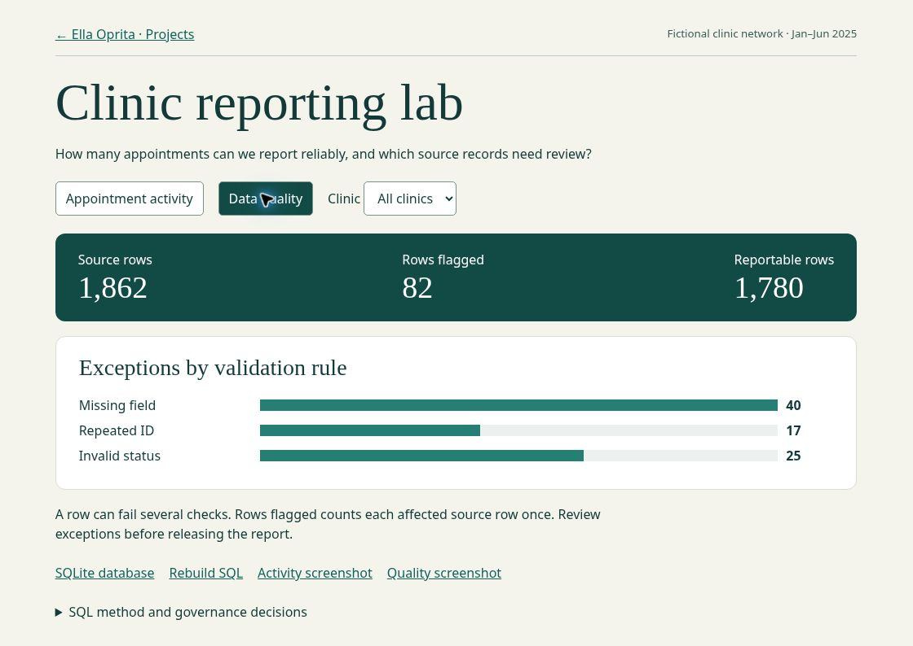

HEALTHCARE CASE STUDY
Clinic Reporting Lab
Follow 1,862 fictional appointment records from the booking export through quality checks to the final attendance report.
- SQL
- Data Quality
- Reporting
- Data Governance

ELLA OPRITA · PORTFOLIO
I’m Ella Oprita, a dental nurse and data analytics graduate. Explore my projects in healthcare analytics, data quality and governance.
HEALTHCARE CASE STUDY
Follow 1,862 fictional appointment records from the booking export through quality checks to the final attendance report.

REPORTING DASHBOARD
Explore demand, cancellations and missed visits across three fictional clinics. Use the filters to compare periods and locations.
Missed-visit rate uses attended plus missed appointments as the denominator. Cancelled slots are reported separately.
DATA QUALITY DASHBOARD
Compare the raw appointment export with the reporting dataset. The checks cover missing required fields, repeated appointment IDs and unsupported statuses.
A row can fail more than one check. The overall total counts each flagged row once.
GOVERNANCE CASE STUDY
A proposed operating model for the same fictional clinic network. The goal is to make the appointment report traceable and give someone clear responsibility when a check fails.
| Field | Definition | Quality rule |
|---|---|---|
| Appointment ID | Identifier for a scheduled slot | Required and unique in the reporting data |
| Appointment date | Day the visit was scheduled to take place | Required and formatted as YYYY-MM-DD |
| Clinic | Site where the slot was scheduled | Must match a clinic in the reporting scope |
| Status | Recorded outcome of the slot | Attended, Did not attend, or Cancelled |
Data lineage · Booking export → quality checks and exceptions → reporting dataset → aggregate dashboard.
ABOUT
I have a QQI Level 8 Higher Diploma in Data Analytics from Dublin Business School and experience maintaining clinical records and using Excel in dental services. I’m interested in opportunities in data governance, data quality and reporting.
Connect on LinkedIn